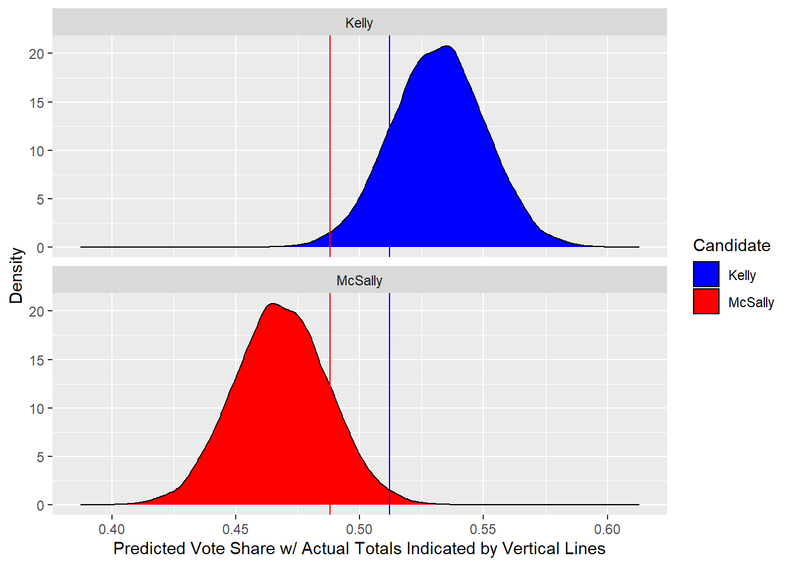

Past national election results

The area in which the density curves overlap (the simulation predicted that McSally would receive a higher vote than Kelly) is quite small based on this model.
In all, the model simulation resulted in Kelly receiving a higher vote share than McSally just over 95% of the time.
## [1] 0.9522667This election was an illustration of a rare instance where a Democrat was favored to win a statewide election in Arizona. While Kelly still did win, it was not the resounding victory many Democrats were hoping for. This echoed the majority of federal elections throughout the country, including the presidential race. Even though McSally benefited from the unaccounted-for red wave, she was unable to ride it to victory like many of her Republican colleagues did.